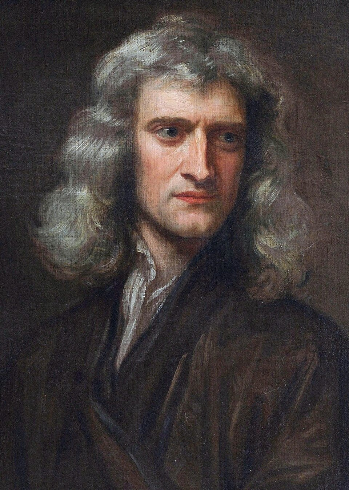

Physicists explore the fundamental properties
and laws that govern space, time, energy, and matter.
They may study theory, design and perform experiments, or apply their knowledge in developing
materials or equipment.
Here are some examples:
Albert Einstein
Developed the theories of Special and General Relativity.
Introduced the famous equation E=mc² (mass-energy equivalence).
Explained the photoelectric effect (Nobel Prize 1921).
Isaac Newton

Formulated the laws of motion and universal gravitation.
Laid the foundation for classical mechanics.
Developed calculus independently.
Niels Bohr
Developed the Bohr model of the atom.
Major contributor to quantum mechanics and nuclear physics.
Founded the Institute of Theoretical Physics in Copenhagen.